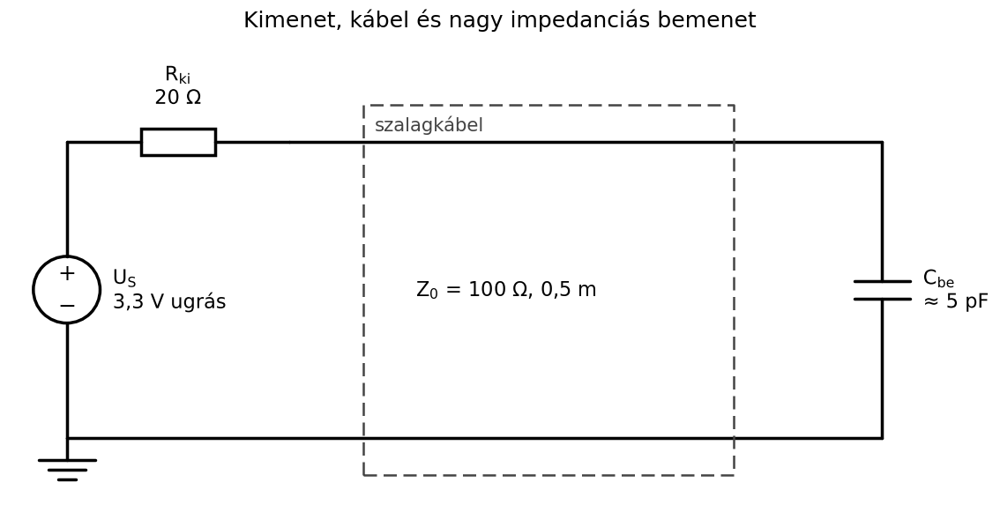
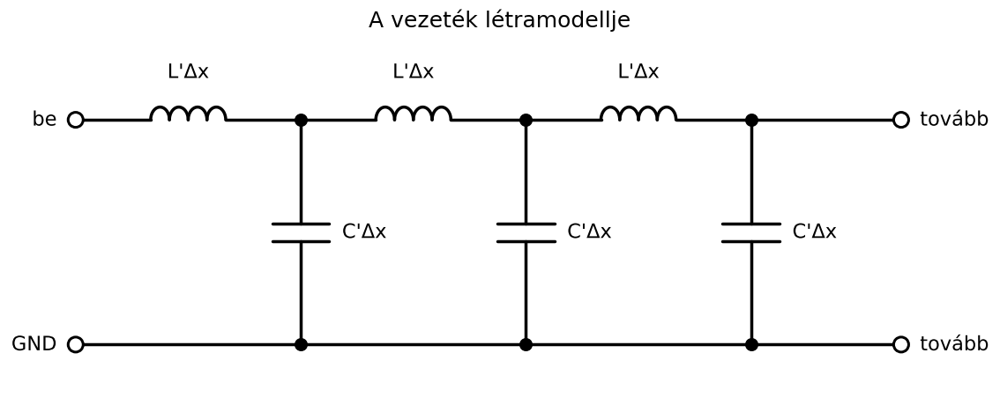
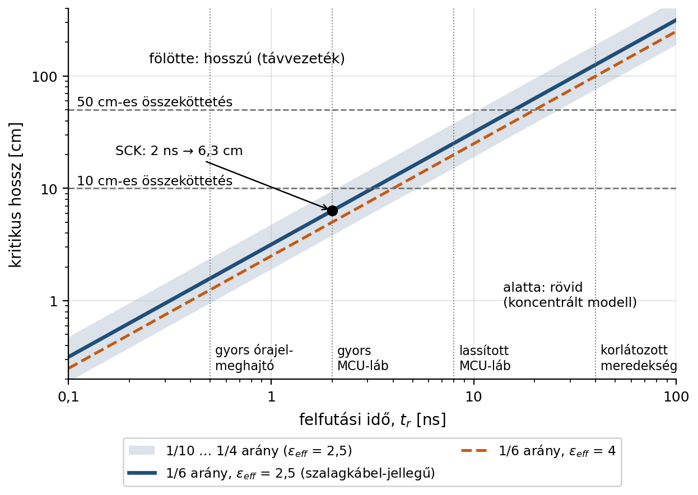
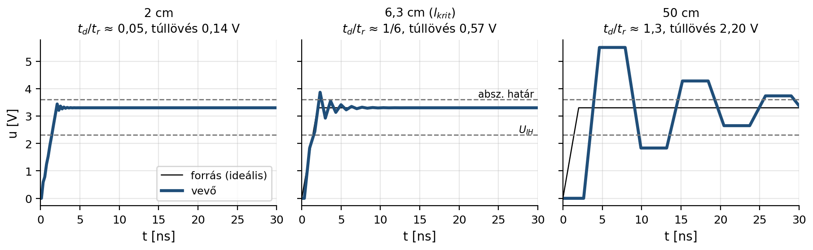

Ebben az alfejezetben megtanulod, hogy
A jelintegritás (signal integrity) azt vizsgálja, hogy a jel a vevőnél olyan alakban érkezik-e meg, amilyet a vevő helyesen tud értelmezni: elég gyorsan, túl nagy túllövés és hamis élek nélkül.
A szenzormodul mikrovezérlője egy külső érzékelőpanelt olvas SPI buszon. A panel 0,5 m szalagkábelen csatlakozik, az órajel (SCK) mindössze 1 MHz. „Ez lassú” – gondolná az ember: a periódus 1000 ns, a kábel pár nanoszekundum alatt „átviszi” a jelet.
A szimuláció mást mutat: a 3,3 V-os kimenet jele a kábel végén 5,5 V-ig ugrik, majd 1,8 V-ra esik vissza, és csak több lengés után nyugszik meg. A vevő bemenete ekkor túlfeszültséget kap, és a lengő jel akár két órajelélnek is látszhat egy helyett. A jelenség oka nem az 1 MHz, hanem az, hogy a kimenet 2 ns alatt vált. Ezt tárjuk fel ebben az alfejezetben; a megoldást, a lezárást a Reflexió, lezárás és illesztés adja.
Az adatok mintaadatok
(elkit.extra_elch23): a kimenet felfutási ideje
,
kimeneti ellenállása
(a futó példa
és
adataiból csak annyi garantált, hogy legfeljebb 50 Ω), a kábel
hullámimpedanciája
,
effektív permittivitása
.
Eddig a vezetéket ideálisnak tekintettük: ha az egyik végén 3,3 V, akkor a másik végén is, ugyanabban a pillanatban. Ez modell. A valóságban a változás véges sebességgel halad végig a vezetéken, nagyjából a fénysebesség felével-kétharmadával. Az elektronok közben lassan sodródnak (lásd Töltés, áram és a zárt áramkör); ami gyorsan halad, az a térállapot változása, a hullám.
Képzelj el egy hosszú, vízzel teli csatornát: ha az egyik végén megemeled a vízszintet, a lökés hullámként fut végig, és a túlsó végen csak később vesznek észre belőle bármit. Az analógia határa: a vízhullám a felszínen lassul és szétterül, a jó vezetéken az elektromos hullám alakja szinte változatlan marad, és két vezető (jel és visszatérő) kell hozzá.

Amíg a hullám útban van, a meghajtó nem tudja, mi van a kábel végén: nyitott, rövidre zárt vagy ellenállás. Csak a kábel saját tulajdonságát „látja”. Ez a legfontosabb új gondolat.
Minden vezetékdarabnak van induktivitása (a körülötte lévő mágneses tér miatt, lásd Mágneses tér és induktivitás) és kapacitása a visszatérő vezetőhöz képest (a köztük lévő elektromos tér miatt). Egy rövid darabot egy soros tekerccsel és egy párhuzamos kondenzátorral rajzolhatunk le, a hosszú vezetéket pedig ilyen szakaszok láncaként:

Amikor a forrás feszültsége megugrik, az első tekercsen keresztül töltődni kezd az első kondenzátor; ha az feltöltődött, a második következik, és így tovább. Így halad a hullámfront.
Gondolkodj előre: a futó példában a jel 2 ns alatt vált, a hullám pedig kb. 2,6 ns alatt ér végig a kábelen. Mit gondolsz, egy pillanatban lehet-e a kábel két végén lényegesen eltérő feszültség? És egy 2 cm-es vezetéken?
A felső sorban a 2 ns hosszú él „elfér” a vezetéken: egy adott pillanatban az eleje már a közepén jár, a forrásnál még csak épp emelkedik a feszültség. Amikor a front eléri a nyitott véget, visszaverődik, és a feszültség a forrásfeszültség fölé ugrik. Az alsó sorban a vezeték olyan rövid, hogy a hullám az él ideje alatt sokszor oda-vissza megjárja; a két vég feszültsége gyakorlatilag együtt mozog. Az animáción a töltéspontok a front mögött elmozdulnak a felső vezetőn előre, az alsón vissza, a front helyén pedig a szaggatott nyilak a két vezető közötti eltolási áramot jelzik: itt éppen töltődik a vezeték kapacitása.
Definíció. A felfutási idő (, rise time) az az idő, amely alatt a jel a teljes lépés 10%-áról a 90%-áig emelkedik.
Az Elsőrendű szűrők, sávszélesség és felfutási idő alfejezetből ismert, hogy egy elsőrendű rendszernél a felfutási idő és a határfrekvencia között áll fenn. Fordítva olvasva: egy élű jel jellemző sávszélessége
Ez azt mondja meg, nagyjából milyen frekvenciáig tartalmaz a jel lényeges összetevőket. Nem éles határ: a Az EMC alapjai: forrás, csatolás, vevő trapézspektrumában az töréspont felett a burkoló már meredeken, 40 dB/dekáddal esik. Mértékegység: .
Az órajel-frekvencia ebben a képletben nem szerepel. Egy 1 MHz-es órajel 2 ns-os éllel -es tartalmat hordoz, ugyanannyit, mint egy 20 MHz-es órajel ugyanilyen éllel. A mai logikai kimenetek gyorsak akkor is, ha ritkán váltanak. Ezt a mintát a könyv így nevezi: a felfutási idő dönt, nem az órajel.
Definíció. Egy egyenletes vezeték induktivitás-vonalsűrűsége (H/m) és kapacitás-vonalsűrűsége (F/m) az egy méterre eső induktivitás, illetve kapacitás. Az olyan vezetéket, amelyen ezek elosztva, folytonosan vannak jelen, és a jel hullámként terjed rajta, távvezetéknek (transmission line) nevezzük.
A következőkben a veszteséget (a vezeték ellenállását és a szigetelő veszteségét) elhanyagoljuk. Rövid, néhány méteres összeköttetésekre ez jó közelítés.
Tegyük fel, hogy a hullámfront feszültséggel, árammal halad sebességgel. Nézzünk egy rövid időt: a front ennyi idő alatt úttal jut előbbre.
Az első egyenletből , a másodikból . A kettőnek egyenlőnek kell lennie:
Definíció. A hullámimpedancia (characteristic impedance) a haladó hullám feszültségének és áramának aránya:
Dimenzióellenőrzés: , a gyöke . A sebességnél , a gyök reciproka .
Szavakkal: amíg a hullám úton van, a meghajtó egy értékű ellenállásnak „látja” a vezetéket, akármi van a végén. Ez nem a vezeték ellenállása:
A sebességet a szigetelő anyag szabja meg. Ha a tér részben levegőben, részben műanyagban halad, a kettő „átlagát” az effektív relatív permittivitás () írja le:
ahol
a vákuumbeli fénysebesség,
a hossz,
az egyirányú terjedési késleltetés. A képlet
nemmágneses anyagokra érvényes. Hüvelykujjszabályként a jel nagyjából
5–7 ns alatt tesz meg egy métert; a pontos érték a szigeteléstől függ
(ellenőrizendő: a kábel vagy a NYÁK-anyag adatlapja).
A és ismeretében és visszaszámolható:
Az egész vezeték kapacitása , induktivitása . Ezt a két képletet a hidegítésnél és a lezárásnál is használjuk.
Ha a vezetőket közelebb hozod egymáshoz, a kapacitásuk nő, az induktivitásuk csökken, tehát csökken. Koaxiális vezetéknél ( a belső vezető átmérője, az árnyékolás belső átmérője):
Csak a méretarány és a szigetelő permittivitása
számít, nem a méret maga. Tipikus névleges értékek: koaxiális kábel 50 Ω
vagy 75 Ω, sodrott érpár 100 Ω körül
(ellenőrizendő: a kábel adatlapja, illetve az adott interfész szabványa).
A NYÁK-vezetősávok hullámimpedanciáját a rétegrend és a sávszélesség
határozza meg; ennek számítása a NYÁK-tervezés feladata, a kapcsolási
rajzon csak az előírt értéket rögzítjük.
Gyors soros interfészeknél gyakori a differenciális
pár: a két vezetőn ellentétes jel halad, a vevő a különbségüket
figyeli, így a mindkettőt egyformán érő zavar (közös módus, Az EMC alapjai: forrás, csatolás, vevő) kiesik.
Ilyen például az LVDS (low-voltage differential signaling), ahol a pár
differenciális impedanciája jellemzően 100 Ω, és a vevőnél a két ér közé
kerül a lezáró ellenállás (ellenőrizendő: TIA/EIA-644). A
részletekbe nem megyünk bele.
Ha a vezeték „rövid”, a hullám az él ideje alatt sokszor oda-vissza megjárja, a visszaverődések elmosódnak, és a vezeték koncentrált elemekkel (egy kapacitással és egy induktivitással) írható le. Ha „hosszú”, az elosztott modell, vagyis a távvezeték kell. A határ a felfutási idő alatt megtett úthoz viszonyított kritikus hossz:
Az 1/6 hüvelykujjszabály, nem fizikai törvény: egyes források 1/10-et (szigorúbb), mások 1/4-et használnak. A feltétel -nél , vagyis az oda-vissza út a felfutási idő harmada. Mértékegység: .

A függőleges pontozott vonalak jellegzetes felfutási időket jelölnek (mintaadatok; a valódi érték az adatlapból, és a kimenet beállításától függ). A 10 cm-es összeköttetés 8 ns-os éllel még „rövid”, 2 ns-os éllel már hosszú.
A szabály nem éles: alatt sem nulla a túllövés. A következő ábra ugyanazt a meghajtót mutatja három vezetékhosszon.

A -en még 0,57 V (17%) a túllövés, mert a meghajtó 20 Ω-os ellenállása erősen eltér a 100 Ω-os vezetékétől. A 10%-os határt ebben az esetben már kb. 5 cm-nél elérjük. Ha a túllövés számít, az 1/6-os becslés csak azt mondja meg, hogy szimulálni vagy lezárni kell.
Továbbvitt eredmény. A felfutási idő alapján a kritikus hossz (hüvelykujjszabály), a hosszabb összeköttetést hullámimpedanciájú, késleltetésű távvezetékként kezeljük. Ezt a Reflexió, lezárás és illesztés, a Kapcsolási rajz konvenciói és a NYÁK-tervezőnek átadott kényszerek és a Tervezési átvizsgálás és átadás a NYÁK-tervezésnek használja.
A felfutási időt nem csak elszenvedni lehet, tervezni is:
Továbbvitt eredmény. A felfutási idő tervezési paraméter: a lehető leglassabb, még megfelelő élt válaszd, mert csökkenti a túllövést, az áthallást és a kibocsátást. A Követelményektől a blokkdiagramig a jelek követelményei között szerepelteti.
A hullámfrontnál a jelvezetőn előre folyó áram a vezeték kapacitásán „átzárul” a visszatérő vezetőbe, és ott visszafelé folyik. A hurok tehát a fronttal együtt halad: minden áramnak van visszatérő útja, már az első nanoszekundumban is, jóval azelőtt, hogy a jel elérné a vevőt. Nagy frekvencián a visszatérő áram közvetlenül a jelvezető alatt, illetve mellett folyik (lásd Földelési stratégiák és visszatérő áramutak). Ha a visszatérő vezető megszakad vagy messzire kerül (rés a földfelületben, egyetlen közös földér sok jel mellett), a ott megváltozik, a hurok megnő, és reflexió, áthallás és sugárzás keletkezik. A szalagkábelen ezért érdemes a jelerek mellé földereket kiosztani.
Adatok: , , , , , lépés 3,3 V.
Józanész-ellenőrzés: , a hosszúság tehát nem határeset. A 27,5 mA meghaladja a GPIO ajánlott 8 mA-es tartós áramát (mintaadat). Ez a lüktetés csak az oda-vissza útig, kb. 5 ns-ig tart, de jelzi: a meghajtó a vezetéket nem „üresjáratban” hajtja.
A paramétereket az elkit.tline számolja:
from elkit import tline, units
from elkit import extra_elch23 as k
p = tline.params_from_z0(k.Z0, k.EPS_EFF)
td = tline.propagation_delay(k.LEN, k.EPS_EFF)
lk = tline.critical_length(k.T_R, k.EPS_EFF)
print("sávszélesség:", units.fmt(tline.bandwidth_from_rise_time(k.T_R), "Hz"))
print("sebesség:", f"{p.v:.3g} m/s,", f"{p.t_pd * 1e9:.2f} ns/m")
print("késleltetés:", units.fmt(td, "s"), " kritikus hossz:", units.fmt(lk, "m"))
print("L' =", units.fmt(p.l_per_m, "H/m"), " C' =", units.fmt(p.c_per_m, "F/m"))
print("hosszú?", tline.is_long(k.LEN, k.T_R, k.EPS_EFF), f" l/l_krit = {k.LEN / lk:.1f}")sávszélesség: 175 MHz
sebesség: 1.9e+08 m/s, 5.27 ns/m
késleltetés: 2.64 ns kritikus hossz: 63.2 mm
L' = 527 nH/m C' = 52.7 pF/m
hosszú? True l/l_krit = 7.9A második blokk ugyanazt a meghajtót különböző hosszakon szimulálja
(haladó hullámok), és a geometria hatását is megmutatja a
coax_z0 és wire_pair_z0 függvénnyel:
for length in (0.02, 0.05, 0.063, 0.15, 0.5):
res = tline.simulate(k.Z0, tline.propagation_delay(length, k.EPS_EFF),
tline.ramp_step(k.U_IO, k.T_R), k.R_KI, t_end=40e-9, n_cells=200)
over = res.v_load.max() - k.U_IO
print(f"{length * 100:5.1f} cm: túllövés {over:.2f} V ({over / k.U_IO:.0%})")
print(f"koax D = 2,95 mm, d = 0,9 mm, er = 2,25: {tline.coax_z0(2.95e-3, 0.9e-3, 2.25):.1f} Ω")
print(f"huzalpár D = 2 mm, d = 1 mm, er = 2,5: {tline.wire_pair_z0(2e-3, 1e-3, 2.5):.1f} Ω") 2.0 cm: túllövés 0.14 V (4%)
5.0 cm: túllövés 0.31 V (10%)
6.3 cm: túllövés 0.57 V (17%)
15.0 cm: túllövés 1.43 V (43%)
50.0 cm: túllövés 2.20 V (67%)
koax D = 2,95 mm, d = 0,9 mm, er = 2,25: 47.5 Ω
huzalpár D = 2 mm, d = 1 mm, er = 2,5: 99.9 ΩAz interaktív lapon a vezetéket felül látod (töltéspontok, áramnyilak, eltolási áram), alatta a feszültséget a hely szerint, jobbra a két vég időfüggvényét.
A digitális jel gyorsaságát a felfutási idő adja: , az órajel-frekvenciától függetlenül. A hosszú vezeték elosztott paraméterű távvezeték: rajta a jel hullámként halad sebességgel, késleltetéssel. A haladó hullám feszültség-áram aránya a hullámimpedancia, ; a geometria és a szigetelő szabja meg, a hosszól független, és nem egyenáramú ellenállás. Az összeköttetés akkor hosszú, ha nagyobb, mint (hüvelykujjszabály, 1/10–1/4 arány is használatos); ekkor reflexiót és lengést kell vizsgálni. A visszatérő áram a hullámfronttal együtt, a jelvezető mellett folyik. A felfutási idő tervezési paraméter: a lassabb él kíméli az áramkört.
1. ; ; .
2. ; ; ; (ellenőrzés: ).
3. . (a) , : az 5 cm-es vezeték rövid (a soros a gate-körben ettől még okozhat lengést, lásd Kapcsolási folyamat: gate-töltés, Miller-plató és meghajtás). (b) : a 30 cm-es vezeték hosszú, pedig csak 1 kHz a jel.
4.
.
Rövid, ha
.
A vezeték kapacitása
,
a bemenettel együtt kb. 12,7 pF. Az élek négyzetes összegzésével az
RC-rész
,
ebből
összesen, azaz
külső, E24-ből 75 Ω. A simulate szerint 75
Ω-mal a túllövés eltűnik, a vevő felfutási ideje viszont csak kb. 2,2
ns, mert a vezeték nem egyetlen koncentrált kapacitás. A lényeg elérve;
ha pontosan a 2,77 ns kell, 100 Ω-mal kb. 3 ns adódik.
5.
import numpy as np
for tr in (1e-9, 2e-9, 5e-9):
t = np.linspace(0, 40 * tr, 4001)
last = None
for length in np.arange(0.002, 0.4, 0.001):
td = tline.propagation_delay(length, k.EPS_EFF)
bd = tline.bounce_diagram(k.U_IO, k.R_KI, k.Z0, float("inf"), td, n_max=600, tol=1e-9)
if bd.v_load(t, tr).max() > 1.1 * k.U_IO:
break
last = (length, td)
print(f"t_r = {tr * 1e9:.0f} ns: max. {last[0] * 100:4.1f} cm, "
f"t_d/t_r = {last[1] / tr:.3f}")t_r = 1 ns: max. 2.5 cm, t_d/t_r = 0.132
t_r = 2 ns: max. 5.1 cm, t_d/t_r = 0.134
t_r = 5 ns: max. 12.8 cm, t_d/t_r = 0.135A határ a felfutási idővel arányos; ennél a meghajtónál és 10%-os kritériumnál a határ kb. , vagyis 1/7,5. Más más arányt ad: az 1/6 csak tájékoztató.
6. , tehát (a pontosabb 119,9 Ω-os állandóval 2,54). A tengelytávolság az átmérő kb. 2,5-szerese.